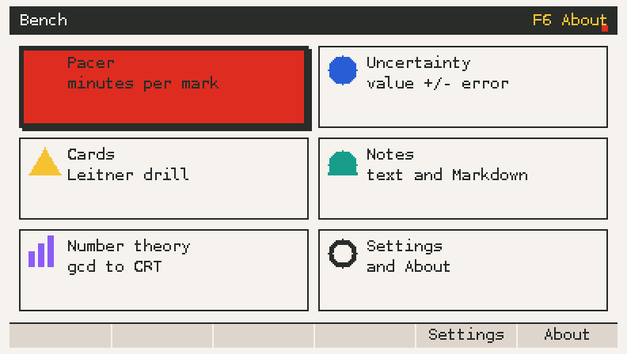
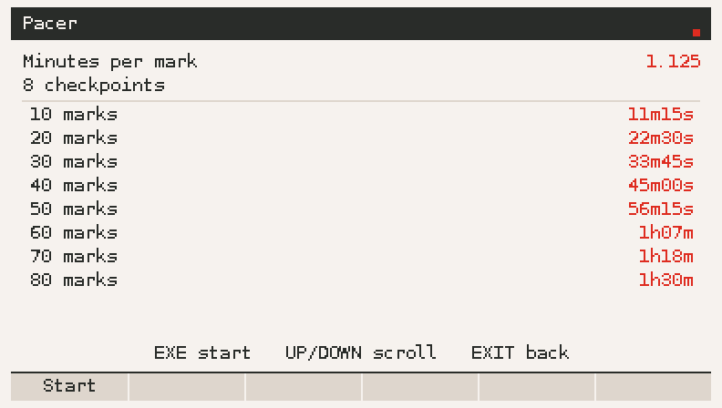
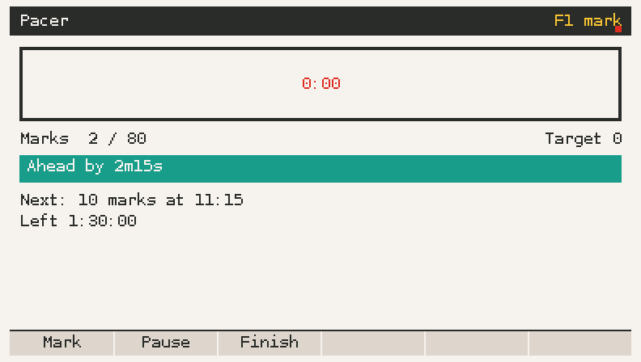
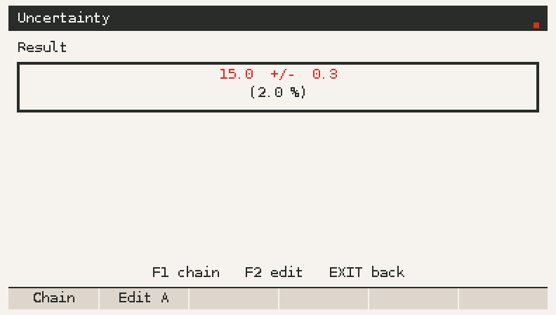
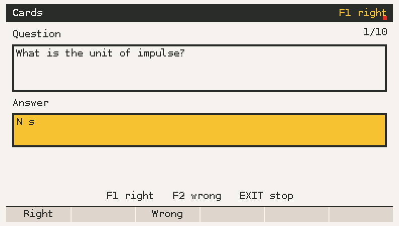
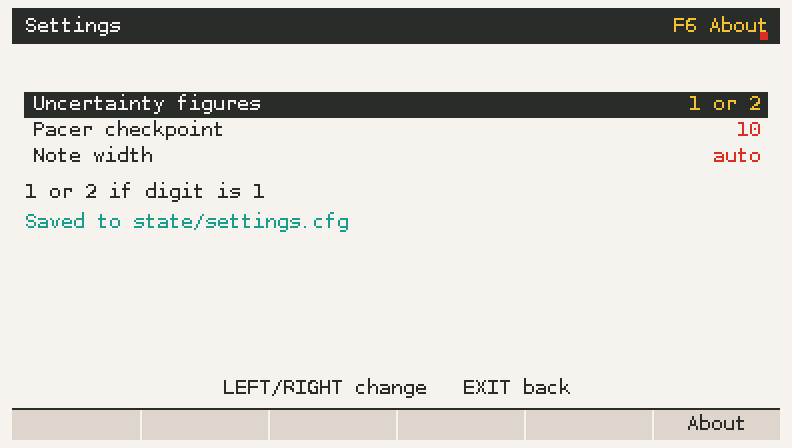
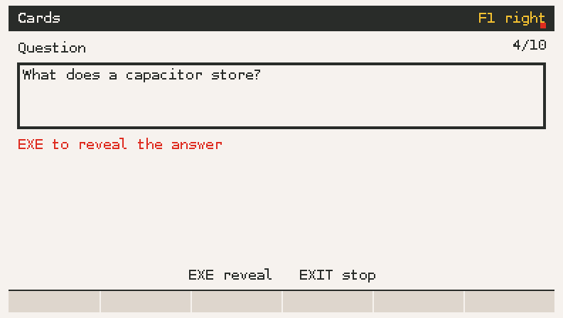
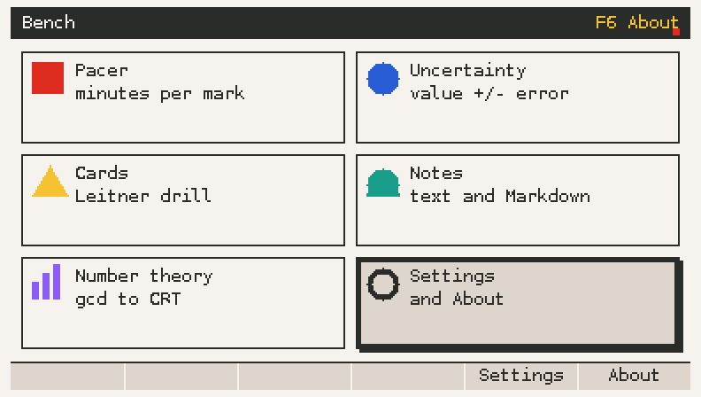

Pacer
Minutes per mark, checkpoint times and a live gap line: behind by 1m20s, ahead by 40s. F1 logs a mark, F2 pauses, F3 finishes.
90 min / 80 marks = 1.125 min/mark
Casio fx-CG 50 · add-in
Bench keeps the whole exam day in one place: pace a practice paper, combine measurements with their errors, drill flashcards, read your notes, and check the maths that number theory questions ask for.

Six tiles on the home screen. Arrows to move, EXE to open, EXIT to go back.
Minutes per mark, checkpoint times and a live gap line: behind by 1m20s, ahead by 40s. F1 logs a mark, F2 pauses, F3 finishes.
90 min / 80 marks = 1.125 min/mark
Add, subtract, multiply, divide, powers and constants, with the percentage on the same screen. Chain the result into the next step.
(10.0 ± 0.1) + (5.0 ± 0.2) = 15.0 ± 0.3
Leitner drill from a plain text deck. Three boxes, progress keyed by the question, saved once when the session ends.
question | answer · 500 cards a deck
Markdown with headings, bold, italics, code, lists, quotes and checkboxes, plus search, or plain text. 32 KiB a note.
F1 find · F2 next · F3 headings
gcd, extended gcd with steps, modular inverse, modpow, primality, factorisation with a progress bar, totient and CRT.
factor(600851475143) = 71·839·1471·6857
Rounding rule, checkpoint size, note width. The About screen shows the version, build date and free memory.
written only when a value changes
These are not mock-ups. They are frames the add-in's own code rendered,
pixel for pixel, through the host preview in tools/sim.








| Key | Where | What it does |
|---|---|---|
| Arrows | everywhere | move, scroll, change a value |
| EXE | everywhere | confirm, reveal a card, run |
| EXIT | everywhere | one step back |
| MENU | everywhere | leave the add-in |
| F1 / F2 | Cards | right / wrong |
| F1 / F2 | Notes | search / next hit |
| F3 / F4 | Notes | headings / top |
| F5 / F6 | home | Settings / About |
Download Bench-1.0.0.g3a from the releases page.
Connect the calculator in USB Flash mode and copy the
file to the storage root, next to @MainMem.
Press MENU. Bench appears as a new add-in. It makes
its own Bench folder on first run.
Exam Mode blocks every add-in, Bench included. The code never reads, changes or works around Exam Mode.
Bench 1.0.0 is complete in source: 2 791 native checks pass, every screen
renders, and the code type-checks against the real gint headers. The
.g3a is built by the GitHub workflow, not by the machine
that wrote the code, so the first hardware run is still yours. The ten
questions in docs/spike.md are the ones to watch.